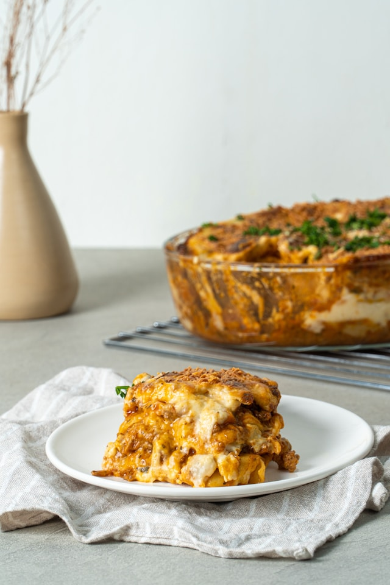

Home
Lasagna

Description
This homemade lasagna is a comforting Italian classic layered with rich meat sauce, creamy ricotta,
and perfectly melted mozzarella. Each bite offers a balance of savory flavors and hearty textures.
The recipe is designed for home cooks and doesn’t require special equipment — just a bit of time
and patience to let the layers bake into a golden, bubbling masterpiece.
Ingredients
- 12 lasagna noodles
- 500g ground beef
- 1 onion, diced
- 2 cloves garlic, minced
- 800g canned tomatoes
- 2 tbsp tomato paste
- 250g ricotta cheese
- 200g shredded mozzarella
- 50g grated Parmesan
- 2 tbsp olive oil
- Salt and pepper to taste
- Fresh basil leaves (optional)
Steps
- Preheat your oven to 180°C (350°F).
- Cook the lasagna noodles according to package instructions. Drain and set aside.
- Heat olive oil in a pan, sauté onion and garlic, then add ground beef. Cook until browned.
- Add canned tomatoes and tomato paste. Simmer for 15–20 minutes. Season with salt and pepper.
- In a baking dish, spread a thin layer of sauce. Add noodles, ricotta, sauce, and mozzarella. Repeat layers.
- Top with remaining mozzarella and Parmesan.
- Bake for 35–40 minutes, until golden and bubbling.
- Let it rest for 10 minutes before slicing. Garnish with fresh basil if desired.